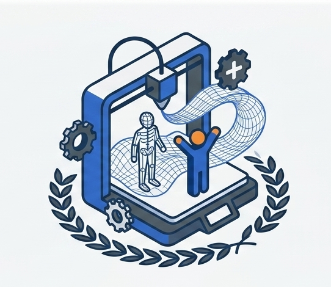
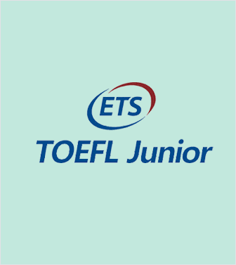
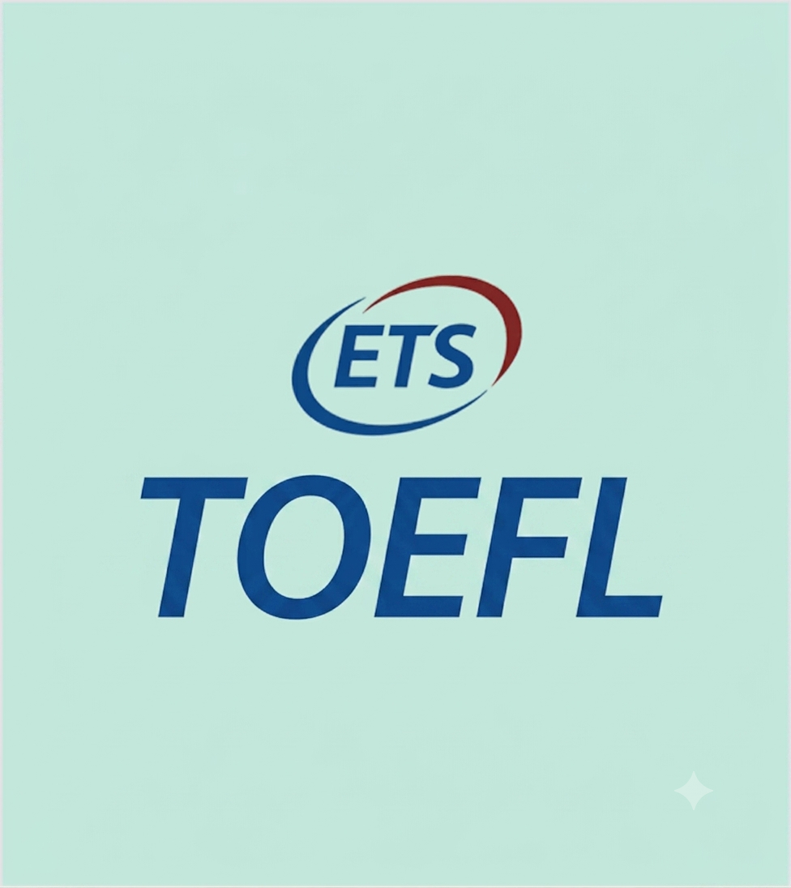
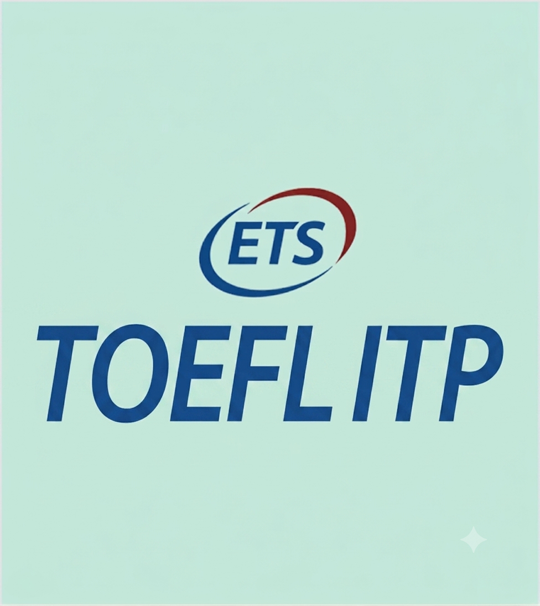

Nuestros estudiantes desarrollan habilidades avanzadas en el uso de herramientas tecnológicas, programación y resolución de problemas digitales.
Nuestros estudiantes participan en laboratorios y proyectos científicos, obteniendo certificaciones que avalan su conocimiento en ciencias naturales.
Nuestros estudiantes participan en laboratorios y proyectos científicos, obteniendo certificaciones que avalan su conocimiento en ciencias naturales.
Mejor manejo de presentaciones orales de alto impacto,Excelente explicación visual de conceptos complejos, Mayor integración de datos investigados sin errores,Defensa de tesis o proyectos finales con seguridad.
Eficiencia en la elaboración de trabajos escritos con formato profesional,Una gestión eficiente de documentos extensos,Colaboración segura en trabajos grupales,Creación de formularios para investigaciones
El análisis de datos experimentales y encuestas,Mejor visualización de resultados con gráficos profesionales,La automatización de cálculos complejos,Modelado de escenarios para proyectos.

Diagnóstico preciso para una enseñanza personalizada,Base sólida para el éxito en materias bilingües,Desarrollo de habilidades académicas tempranas,Facilita la movilidad escolar internacional.

Cumplimiento del requisito de admisión universitaria,Preparación para la exigencia académica real,Exención de cursos de inglés remediales,Habilidades de toma de apuntes y comprensión de conferencias.

Herramienta institucional de ubicación precisa,Medición estandarizada del progreso del programa,Requisito de egreso o titulación,Investigación y estudios de correlación.